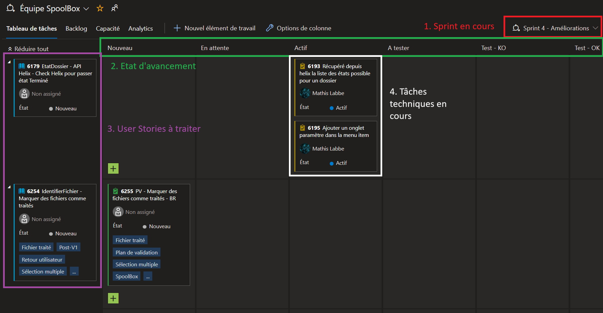
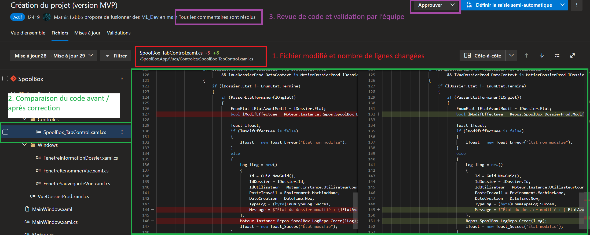
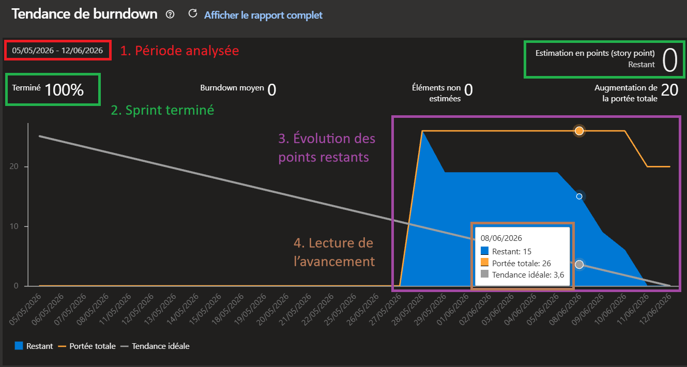

Cette partie montre comment mon travail est organisé dans un cadre professionnel : User Stories,
tâches techniques, estimations, sprint, daily, suivi des points restants et Pull Requests.
Suivre l'avancement d'un sprint avec Azure DevOps
Comprendre une User StoryGérer des tâches techniquesSuivre l'avancement

Trace 4 - Tableau de tâches Azure DevOps du sprint 4 du projet SpoolBox. Cette capture montre
le sprint en cours, les colonnes d'avancement, les User Stories à traiter et les tâches techniques
actuellement actives.
La trace 4 présente le tableau de tâches Azure DevOps utilisé pendant le
sprint 4 - Améliorations du projet SpoolBox. Il permet de suivre l'organisation du travail
pendant un sprint, depuis les éléments à faire jusqu'aux tâches terminées ou à tester.
Cette trace met d'abord en avant le savoir-faire
suivre l'avancement.
Le repère 1 indique le sprint en cours, ce qui permet de situer les tâches dans une période
de travail précise. Le repère 2 montre les colonnes du tableau, comme
Nouveau, Actif, À tester, Test - KO
et Test - OK. Ces colonnes permettent de visualiser rapidement l'état d'avancement de chaque
élément.
On retrouve aussi le savoir-faire
comprendre une User Story.
Le repère 3 montre les User Stories à traiter. Une User Story correspond à un besoin ou à une
amélioration demandée sur l'application. Avant de développer, je dois comprendre l'objectif du ticket, identifier
ce qui est attendu et repérer les parties du projet concernées.
Enfin, cette trace illustre le savoir-faire
gérer des tâches techniques.
Le repère 4 montre des tâches placées dans la colonne Actif. Cela signifie
qu'elles sont en cours de développement. Certaines tâches me sont assignées, ce qui montre ma participation
directe au sprint et au développement de SpoolBox.
Cette organisation m'aide à mieux structurer mon travail. Au lieu de travailler uniquement sur le code, je dois
aussi suivre l'état de mes tâches, expliquer mon avancement et signaler les éventuelles difficultés. C'est un
point important dans mon évolution, car l'organisation, l'anticipation et le fait de rendre compte de mon activité
sont des compétences que je continue de développer en entreprise.
Améliorer son code grâce aux Pull Requests
Préparer une Pull RequestComparer et corriger le codePrendre en compte les retours

Trace 5 - Pull Request Azure DevOps sur le projet SpoolBox. Cette capture montre le fichier modifié,
la comparaison du code avant/après correction et l'étape de revue avant la fusion vers la branche principale.
La trace 5 présente une Pull Request réalisée sur le projet SpoolBox. Une Pull Request
permet de proposer des modifications de code avant de les intégrer dans la branche principale du projet.
Dans cette capture, le travail est proposé depuis une branche de développement vers la branche
main.
Cette trace met d'abord en avant le savoir-faire
préparer une Pull Request.
Le repère 1 montre le fichier modifié, ici
SpoolBox_TabControl.xaml.cs, ainsi que le nombre de lignes supprimées et ajoutées.
Cela permet d'identifier rapidement les parties du projet concernées par la modification.
On retrouve aussi le savoir-faire
comparer et corriger le code.
Le repère 2 montre la comparaison entre l'ancienne version du code et la nouvelle version.
Les lignes rouges correspondent au code supprimé ou remplacé, tandis que les lignes vertes correspondent
au code ajouté. Cette vue permet de vérifier précisément ce qui a changé avant d'accepter la modification.
Enfin, cette trace illustre le savoir-faire
prendre en compte les retours.
Le repère 3 montre que les commentaires de revue sont résolus et que la Pull Request peut
passer à l'étape de validation. La revue de code permet à l'équipe de contrôler la qualité du code, de
proposer des améliorations et d'éviter d'intégrer des erreurs dans le projet.
Cette méthode m'a fait progresser dans ma manière de travailler. Je dois produire un code lisible, maintenable et conforme aux règles de
l'équipe. Les Pull Requests m'aident donc à prendre du recul sur mon travail, à accepter les corrections et
à améliorer progressivement ma qualité de développement.
Suivre l'avancement d'un sprint avec un burndown chart
Suivre les points restantsAnalyser l'avancementRendre compte de son activité

Trace 6 - Burndown chart Azure DevOps du sprint SpoolBox. Cette capture montre l'évolution
des points restants, la portée totale du sprint et la tendance idéale attendue.
La trace 6 présente le burndown chart d'un sprint du projet SpoolBox. Ce graphique
permet de suivre l'avancement du travail sur une période donnée, ici du 05/05/2026
au 12/06/2026. Il donne une vision globale du travail restant et permet de vérifier
si le sprint avance correctement.
Cette trace met d'abord en avant le savoir-faire
suivre les points restants.
Le graphique affiche le nombre de points restants au fil du temps. Dans cette capture, le sprint est
terminé à 100% et le nombre de points restants est à 0. Cela permet
de voir rapidement que les éléments prévus ont été réalisés.
On retrouve aussi le savoir-faire
analyser l'avancement.
La zone bleue représente le travail restant, la courbe orange représente la portée totale du sprint,
et la ligne grise représente la tendance idéale. En comparant ces éléments, il est possible de voir
si le travail diminue progressivement ou si certaines périodes montrent un retard, une surcharge ou
une modification du périmètre.
Enfin, cette trace illustre le savoir-faire
rendre compte de son activité.
Ce type d'indicateur est utile pendant les points d'équipe, car il permet d'expliquer ce qui a été
fait, ce qui reste à faire et si le sprint avance comme prévu. Il ne sert pas seulement à afficher
des chiffres : il aide aussi à mieux communiquer sur l'état réel du projet.
Ce suivi m'a aidé à mieux comprendre l'importance de l'organisation dans un projet professionnel.
Avant l'alternance, j'avais plus de difficultés à prévoir les étapes d'un travail et à mesurer mon
avancement. Avec Azure DevOps et le burndown chart, je visualise mieux la progression du sprint et
je comprends davantage l'intérêt de mettre à jour régulièrement l'état de mes tâches.
Bilan et auto-évaluation du suivi de projet
Savoir-faire général : organiser son travail dans un sprint
Les traces 4 et 6 montrent l'organisation du travail dans Azure DevOps à travers le tableau de tâches
et le burndown chart. Les savoir-faire associés sont
comprendre une User Story,
gérer des tâches techniques,
suivre l'avancement et
suivre les points restants.
Dans le contexte du projet SpoolBox, ces outils permettent de suivre le travail à réaliser pendant un sprint.
Les User Stories représentent les besoins ou améliorations attendues, tandis que les tâches techniques
permettent de découper le travail en étapes plus concrètes. Le tableau Azure DevOps aide à savoir ce qui est
nouveau, en cours, à tester ou terminé.
La principale difficulté pour moi a été de mieux anticiper les étapes d'un développement. Au début, j'avais
tendance à me concentrer surtout sur la réalisation technique, sans toujours bien prévoir le découpage ou le
temps nécessaire. Aujourd'hui, je comprends mieux l'intérêt de structurer mon travail avant de développer.
Mon niveau est correct mais encore en progression. Je sais utiliser le tableau de tâches,
comprendre les éléments qui me sont assignés et suivre leur avancement. Je dois encore progresser sur
l'anticipation, l'estimation de la difficulté et la proactivité lorsque je rencontre un blocage.
Savoir-faire général : collaborer autour du code
La trace 5 montre l'utilisation d'une Pull Request dans Azure DevOps. Les savoir-faire associés sont
préparer une Pull Request,
comparer et corriger le code et
prendre en compte les retours.
Dans le contexte de SpoolBox, une Pull Request permet de proposer des modifications avant de les intégrer
dans la branche principale du projet. La comparaison du code permet de voir précisément les lignes supprimées,
ajoutées ou modifiées. La validation par l'équipe permet de sécuriser l'intégration du code.
Ce savoir-faire a été appris progressivement grâce aux méthodes de travail de l'équipe. En entreprise, le code
ne doit pas seulement fonctionner : il doit aussi être lisible, maintenable et cohérent avec les règles internes.
Les retours des collègues permettent donc d'améliorer la qualité du code avant son intégration.
La difficulté principale est d'accepter que le code puisse être corrigé ou amélioré après une première version.
Au départ, une remarque sur une Pull Request peut donner l'impression que le travail n'est pas terminé ou pas
assez bon. Avec l'expérience, j'ai compris que la revue de code est surtout un outil de progression et de qualité.
Mon niveau est intermédiaire en progression. Je comprends mieux l'intérêt des Pull Requests
et je suis plus à l'aise avec les retours. Je dois encore améliorer ma capacité à relire mon propre code avant
de le proposer, afin d'identifier moi-même certaines erreurs ou améliorations possibles.
Savoir-faire général : rendre compte de son activité
Les traces liées au tableau de tâches et au burndown chart montrent aussi un autre savoir-faire important :
rendre compte de son activité. Il ne suffit pas d'avancer sur
une tâche, il faut aussi être capable d'expliquer ce qui a été fait, ce qui est en cours et ce qui bloque
éventuellement.
Dans l'équipe Desktop, ce suivi se fait notamment à travers les points réguliers et la mise à jour des tâches
dans Azure DevOps. Le burndown chart permet de visualiser
l'évolution des points restants et de voir si le sprint avance
correctement. Il donne une vision plus globale que le simple fait de terminer une tâche individuellement.
Ce savoir-faire est important dans mon alternance, car il montre ma capacité à m'intégrer dans une équipe projet.
En tant qu'alternant développeur, je dois apprendre à expliquer mon avancement clairement, à signaler mes difficultés
et à montrer que mon travail s'inscrit dans l'avancement global du projet.
C'est encore un axe de progression pour moi. J'ai parfois tendance à voir d'abord les problèmes ou ce qui n'est pas
terminé, plutôt que de valoriser ce que j'ai déjà réalisé. Je dois donc continuer à progresser dans ma manière de
présenter mon travail et de communiquer sur mon activité.
Mon niveau est en progression. Par rapport au début de l'alternance, je comprends mieux comment
suivre mon avancement et le rendre visible pour l'équipe. Je dois maintenant gagner en aisance à l'oral, être plus
régulier dans mes retours et prendre davantage l'initiative lorsque j'ai besoin d'aide ou de validation.